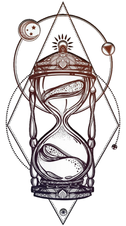

Игроки в роли любознательной девочки Мии и ее кошечки исследуют загадочный дом, в котором каждая комната оживает волшебством. Мия находит волшебные часы, которые могут перемещать её между мирами.
Цель игры — собрать уникальные артефакты, которые помогут исправить ход часов и вернуться обратно в Цель игры — собрать уникальные артефакты, которые помогут исправить ход часов и вернуться обратно в реальный мир.
Мия ищет способ активировать часы и обнаруживает, что каждая книга в библиотеке открывает портал в другой мир.
В этом мире время течет иначе, и Мия должна синхронизировать цветение растений, чтобы собрать цветочные часы.
Мия попадает в город, где игрушки оживают и каждая из них хранит в себе кусочек времени.
Мия оказывается в театре под открытым небом, где звезды рассказывают истории.
В этом мире Мия посещает странный пироговый фестиваль, где каждый пирог является частью головоломки.
Финальный уровень, где Мия должна собрать все артефакты и настроить песочные часы, чтобы вернуться домой.
Игра предлагает игрокам уникальное приключение, где время играет ключевую роль, а каждое решение головоломки приближает Мию к разгадке тайны волшебных часов и возвращению в реальный мир.